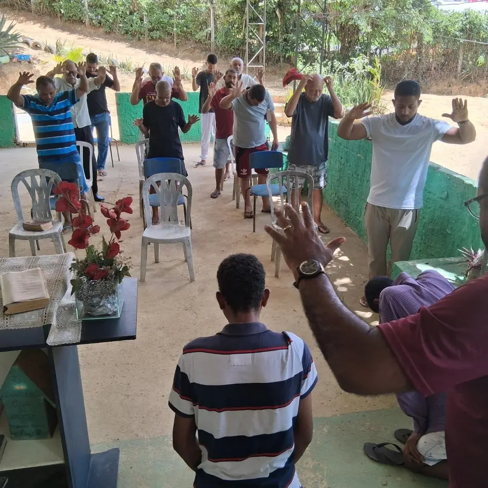
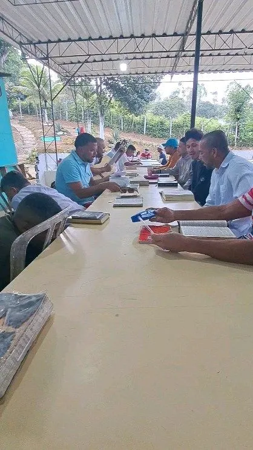
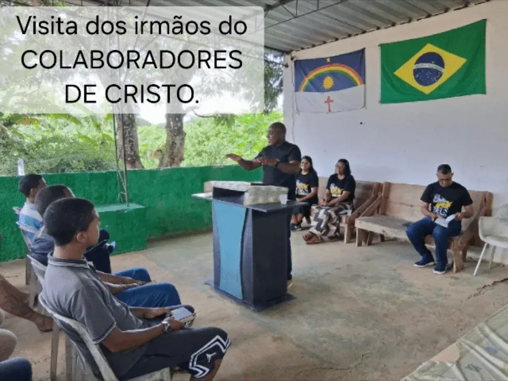
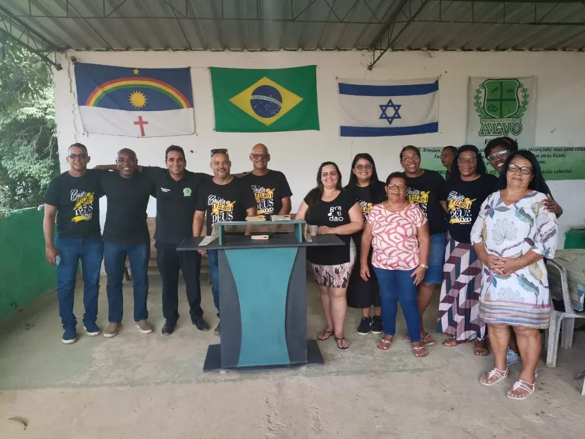
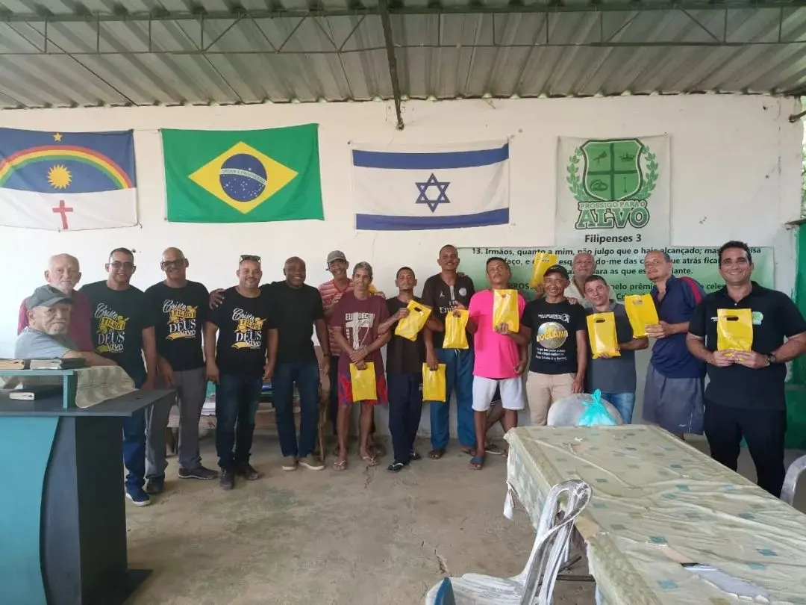

Doações
Alimentos, materiais e contribuição financeira ajudam a manter a estrutura e o acolhimento.
Falar sobre doaçãoPernambuco · Comunidade Terapêutica Cristã
A Prossigo para o Alvo acolhe homens e mulheres que querem sair da dependência química. Aqui a mudança acontece no dia a dia: trabalho, oração, convivência e o apoio de quem não desiste de ninguém.
Atendimento a famílias de toda a região. A primeira conversa é sem compromisso.

Quem somos
Na Prossigo para o Alvo, a recuperação não fica trancada em consultório. Ela acontece na rotina — no serviço da casa, na roça, na mesa compartilhada, na oração da manhã e na conversa que vira madrugada. É viver de novo, em comunidade, com propósito.
O nome vem de Filipenses 3, versículos 13 e 14: “esquecendo-me das coisas que atrás ficam e avançando para as que estão diante de mim, prossigo para o alvo”. É essa a proposta — seguir em frente, um passo de cada vez, sem carregar o peso de tudo o que passou.
Rotina estruturada, trabalho, alimentação e descanso num ambiente natural e tranquilo.
Viver em grupo, reconstruir vínculos, aprender de novo a conviver, ceder e confiar.
A fé cristã como base que sustenta a caminhada e dá sentido ao recomeço.
O dia a dia

O cuidado com a casa e com a terra devolve disciplina, foco e o valor de ver o próprio esforço render fruto.
O dia começa e termina com oração. O estudo bíblico em grupo é o centro da rotina espiritual.
Refeições juntos, conversas, trabalho em equipe. É na convivência que os vínculos se refazem.
Um ambiente afastado do barulho, com verde por perto, ajuda o corpo e a mente a desacelerar.


Como começar
Cada história é diferente, e o caminho respeita o tempo de cada pessoa. Mas ele costuma começar assim:
Você, um familiar ou um amigo entra em contato pelo WhatsApp. A conversa é acolhedora e sigilosa.
Entendemos a situação, tiramos dúvidas e convidamos a família a conhecer a comunidade de perto.
A pessoa é recebida na comunidade, em regime residencial, e passa a fazer parte da rotina e do grupo.
Aos poucos, o vínculo com a família e com a vida lá fora é reconstruído, com acompanhamento.
Homens e mulheres são acolhidos. Se você está em dúvida se é o momento certo, fale com a equipe mesmo assim — ajudamos a entender o próximo passo.
Falar com a equipePara as famílias
Quando a dependência química chega em casa, a família inteira adoece junto: o medo, a culpa, as noites sem dormir. Aqui, o familiar acolhido é tratado com a mesma seriedade com que você trataria o seu filho, o seu irmão, o seu pai.

Fé que sustenta
“Restituir-vos-ei os anos que comeu o gafanhoto.”
Joel 2.25
É essa a esperança que move este trabalho: a de que os anos perdidos para o vício não são o fim da história. Há vida depois — e ela pode ser reconstruída.
“Esquecendo-me das coisas que atrás ficam e avançando para as que estão diante de mim, prossigo para o alvo.”
Filipenses 3.13-14
Faça parte
A comunidade se mantém com o trabalho de dentro e com a mão de quem chega de fora. Há várias formas de somar:
Alimentos, materiais e contribuição financeira ajudam a manter a estrutura e o acolhimento.
Falar sobre doaçãoOfícios, palestras, apoio espiritual, transporte — tempo e talento sempre fazem falta.
Quero ajudarIgrejas, empresas e grupos como os Colaboradores de Cristo caminham junto com a gente.
Ser parceiroFale conosco
Sem formulário longo, sem cobrança. Chame no WhatsApp ou deixe seu contato que retornamos. Se puder, venha conhecer a comunidade com seus próprios olhos antes de qualquer decisão.